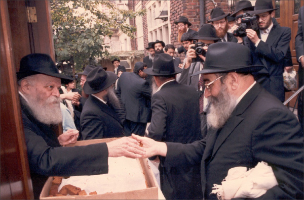

‘You Are My Soldier!’
After the war, R’ Uri Nosson Nota Barkahan a”h returned to Riga and, with a few other survivors, began reestablishing the Chabad community. * About his secret trip to Georgia on shlichus for the Rebbe, about smuggling Chassidic manuscripts out of the Soviet Union, and about his return to Riga after more than twenty years. * Ten years ago, R’ Barkahan was interviewed by Beis Moshiach about his memories of the Chabad community in Riga. * Part 2 of 2

THE CHABAD COMMUNITY IN RIGA IS REESTABLISHED
During World War II (as mentioned in the previous article), nearly the entire Chabad community in Riga was annihilated. A few, like R’ Nosson Nota Barkahan, fled to distant cities in Russia.
After the war, he married the daughter of R’ Nachum Yitzchok Lerman. A short while later, he found out about the opportunity of leaving Russia via Lvov, as many Chassidim did, but he was unsuccessful:
“We arrived in Lvov three days after they arrested R’ Mendel Futerfas, who was one of the organizers of the operation. At the same time, there was a wave of arrests of all suspicious Jewish people and we fled from Lvov while we could. After extensive travel through various cities in the Soviet Union, I returned and settled in my birthplace of Riga.”
When R’ Barkahan returned to Riga, he found a different city. 90,000 Jews had perished in the Holocaust and only 157 people remained. Many anti-Semitic Latvians were happy to join the Nazis, seeing them as their liberators from communist rule, and they joined German army units and helped murder Jews.
After the war, a few Jews trickled back into the city. They had escaped the city during the Nazi occupation and had gone to places under Russian rule. The horror that they discovered was indescribable. Shuls were burned and Jewish homes were looted. Despite the devastation, the Jewish community slowly began to rebuild under the Russians.
“About fifteen Chabad families eventually returned to the city: R’ Zalman Friedman, R’ Shaul Pevsner, R’ Avrohom Godin, R’ Michoel Pizov, R’ Mordechai Aharon Friedman, R’ Shlomo Feigin, R’ Yisroel Konson, my father, R’ Mulle Pruss and his son, Zushe.
“Two Chabad shuls were reopened, but they were closed by the communists in later years. Even when the shuls were still open, we were afraid to daven there. We davened in secret minyanim in private homes. Only after Stalin died did we start going to shul again.
“We Chassidim did not want to stand out in the shuls, but despite the danger we ensured that the running of the shul would be under our control so that the communists wouldn’t take over.
“The building of a mikva was a special project that I remember. Each of the Chassidim gave 5000 rubles, a large sum in those days, and a new mikva was built.
“An episode that I remember as though it happened today goes as follows. There was a time when someone was needed to run matters having to do with Chabad, someone who would take care of various things that came up. At one of the farbrengens, R’ Mulle Pruss suddenly stood up and exclaimed, ‘We are a few families and we need a leader. Who wants to be the leader? If nobody wants to do it, then I’ll be the leader!’
“Then he said, ‘If we don’t need money, I won’t ask for it. If I need it, I’ll extract the money from you like teeth; I won’t give an accounting and whoever wants an accounting, I dismiss him and his money.’ He truly helped tremendously when it came to various Chabad matters and also donated large sums of his own money towards maintaining the mikva and other things.
“The Chabad community was wonderfully united. Fear of the future created a tight bond among the Chassidim. It was impossible for a day to go by without the Chassidim being in touch with one another. Each of them sincerely cared about the welfare of the others and if someone was not in touch for a day or two with one of the Chassidim, people immediately worried that something happened to him.
“We suffered greatly from surveillance and persecution. A search was once conducted in my house and the secret police said to me, ‘If Stalin would be alive, you would not leave our hands alive.’”
Despite the harassment, R’ Barkahan worked to be mekarev Jews to Judaism and Chassidus, one of them being the famous Professor Herman (Yirmiyahu) Branover.
FINDING OUT ABOUT THE PASSING OF THE REBBE RAYATZ THREE YEARS LATER!
Being cut off from the Western world and from Chabad Chassidim outside the Soviet Union, the Lubavitchers behind the Iron Curtain did not know about the passing of the Rebbe Rayatz. Anash in Riga heard the news on a foreign radio broadcast. One of the Chassidim, who heard about the present Rebbe, understood that the Rebbe Rayatz had passed away and his son-in-law had succeeded him. That was in 1953, three years after the Rebbe’s passing!
All the Chassidim in Riga met, including R’ Shlomo Feigin, R’ Yisroel Konson, R’ Mulle Pruss, his son Zushe and R’ Notke Barkahan, at a farbrengen. They all cried and the mashke flowed. They found it hard to digest the fact that the Rebbe Rayatz was gone. At first, nobody could speak. Each one was immersed in his thoughts and pondering the bond he had with the Rebbe.
“The hours went by and the silence continued. Other than the l’chaims that flowed like water, nobody spoke. It was only after a long time that the Chassidim realized they had to farbreng and accept the new Rebbe’s leadership.
“Those farbrenging began to imagine what it would be like to have yechidus with the Rebbe for the first time. There they were, Chassidim behind the Iron Curtain, picturing what it would be like when they got out and had yechidus, what they would say to the Rebbe, how they would relate to him.
“Then I said, ‘I don’t understand the problem. I will go to the Rebbe, salute, and say: I came to continue my service in the army.’
“It was most incredible how years later when I had yechidus for the first time, the Rebbe immediately said to me, ‘You are my soldier and you need to be happy. My teacher and father-in-law said that when a soldier starts his service he does so happily. Why, when it’s dangerous? Because he is confident of victory!’
“This seemed to me like a direct response to what I had said in Riga twenty years earlier. How did he know? I don’t know.”
SECRET MISSION TO GEORGIA
R’ Barkahan did not have to wait for his first yechidus in order to be a soldier of the Rebbe. Even when he lived behind the Iron Curtain, and the communist regime dogged the footsteps of the Chassidim, he was involved in the Rebbe’s missions. As a loyal and discreet shliach, he wasn’t willing to volunteer many details, but from what he did reveal, one can see his devotion to the Rebbe.
“It was in the 60’s. I got a message from the Rebbe that I should go to Soviet Georgia to investigate the state of Judaism there.”
When R’ Notke says, “I got a message from the Rebbe,” he did not explain how this message reached him.
“I took off from work with the excuse that I was going to Georgia for my health, to rest up a bit from the stress of work. I arrived at a small town on the shore of the Black Sea, a gorgeous place. Shortly after I arrived, I went out to look for a shul. In Georgia, it was much easier to be religious than in other states in the Soviet Union.
“At first I had a hard time communicating, since most of the people spoke Georgian and not Russian. I went to a kiosk and tried to talk. The owner asked me to wait a minute and he came back with a Jew who, afterward, I learned was the Chacham. A few Jews lived in this town and they brought a young Chacham to run their community.
“I told him that I needed to daven. He said to me, ‘On condition that you will be with me for Shabbos.’ Of course I agreed, though not before I told him that I would have to be allowed to eat what I wanted. I was happy to see that in even in this distant resort spot there was a minyan. I went to the shul and on Shabbos I was the Chacham’s guest.
“After Shabbos, I went to Kulashi where I knew there was flourishing Jewish life under the noses of the communists. I began walking around and suddenly found myself under arrest. It seems my camera was my undoing. I had officially come on vacation, which is why I had taken my camera and taken pictures, but in Kulashi, modernization was still in its infancy and there were hardly any cameras. They suspected me of being a spy. Citizens called the police. I explained that I was an engineer in a large factory in Riga and I was on vacation. I had taken pictures in all innocence with no ill intentions.
“They called the factory where I worked and after questioning them, they realized I was innocent and I was immediately released.
“I was released a few hours before Shabbos. The Jews were afraid to host me after they heard I had been arrested. They were afraid to associate with me. In the end, I was hosted by one of the rabbis, Chacham Eliyahu. He understood that I had come to help the Jews.
“I held a farbrengen on Motzaei Shabbos with the Georgian Chachamim, all of whom were mekuravim to Chabad and learned Chassidus.
“I carried out the Rebbe’s shlichus, left on Sunday, and returned to Riga. I passed through Odessa where I wrote a detailed report to the Rebbe. At that time, it was still possible to have a connection to Israel, as opposed to the US; then it was a terrible crime to correspond with someone in America. So I wrote to the Rebbe through R’ Efraim Wolf.
“I wrote all about the state of Judaism in Georgia. I knew that if this letter fell into the wrong hands I would be in danger. The letter had to be written anonymously so they wouldn’t know who wrote it. After much thought, I wrote on the envelope that the letter was sent from Odessa and I added a fictitious address. I was also very careful with how I addressed it and instead of writing Ephraim’s name, I wrote: To my brother Menasheh Zev, Rechov Ploni, Number Almoni, Lud, Israel. I underlined the words Ploni and Almoni.
“I later found out that the letter arrived at the central post office in Lud. The postmen had no idea who the letter was meant for, because there was no name and it just said Ploni and Almoni. The Chassid R’ Berish Rosenberg who worked at the central branch, said that a letter that came from Russia should not be sent back. He took the envelope and tried to figure out who it was for.
“In the end, this clever Chassid figured it out. The brother of Menasheh – that’s Efraim. And Zev in Yiddish is Wolf, so he realized that the letter was addressed to Efraim Wolf. The letter reached the right person and from there was sent to the Rebbe.”
SMUGGLING OVER THE BORDER OF THE SOVIET UNION
Another project R’ Notke was involved with was sending bichlach (booklets), i.e. Chassidic manuscripts, out of the Soviet Union to the Rebbe. This was a very complicated and dangerous operation. For many years, the Chassid R’ Mottel Kozliner was in charge of this important matter. Eventually, R’ Barkahan was enlisted too.
“R’ Mottel, whom I knew in Samarkand during the war, got me involved in searching for Chassidic manuscripts. Over the years, I traveled throughout the Soviet Union to try and locate them. I sent the Rebbe over forty bichlach! Obtaining and sending them was a project requiring dedication, courage, and much secrecy. Danger lurked everywhere.
“I’ll tell you about one of the smuggling jobs I did. It was when R’ Nissan Mindel, the Rebbe’s secretary, visited Riga in 5724. My friends and I gave him sixteen packages of bichlach. As an American citizen, he wanted to send the manuscripts via diplomatic mail through the American embassy so that the censors wouldn’t be able to get their hands on it. For a few days he tried to convince the people at the embassy, but met with no success. Having no choice, he decided to smuggle them out with him.
“He took a train to the border and when he got there, they began examining his luggage, all but the small suitcase in which he had his personal things and the precious manuscripts.
“When he reached the Rebbe, he told him the saga. The Rebbe smiled broadly when he heard of the open miracle, and did not say a word.”
R’ Barkahan himself smuggled bichlach out of Russia. It was after many years of asking to leave the Soviet Union and being refused time after time. The evil communist regime refused to allow Jews to leave the country. It was only in 5729 that he finally received his visa. He planned on taking a large quantity of bichlach with him, even though he knew that if he got caught, not only would they take away his visa but he would spend many years under lock and key.
“When I left the Soviet Union, among the things I took with me was a couch. Inside it, I hid all the bichlach which were a veritable treasure. I knew that the danger was great but I was ready to take the chance. I filled the couch with the booklets of Chassidus and manuscripts. I wanted to send the couch along with my other furniture by ship.
“When I went through customs, they began examining all my things. They went through everything. It was hard to hide anything. I began to sense the impending danger.
“Earlier on, I had been told that among the customs officials there was a goy by the name of Anatoly who loved a bribe. I innocently began asking who Anatoly was. I met him and shook his hand warmly while slipping him some money. He looked to see how much it was and wasn’t satisfied. He asked, ‘And where is the money for Anatoly?’ I gave him more money and he immediately gave the order to seal all my things with a seal that said it had been examined.
“The Rebbe had tremendous nachas when I came to 770 a few months after I had moved to Eretz Yisroel, and gave him (through the secretaries) all the contents of the couch. The Rebbe’s response was: Many thanks. This is real pidyon shvuyim.”
RETURNING AFTER 20 YEARS
R’ Notke lived in Eretz Yisroel for less than twenty years. During that time he was mekarev people, especially Russian Jews. He worked under the auspices of Shamir, directed by Prof. Branover.
With the start of perestroika, he returned to Riga on the Rebbe’s shlichus. It was 5748, when the communist government was beginning to make reforms. Shamir paid the expenses and R’ Notke went back to his home town.
“My beard wasn’t a problem, though what I brought along in my luggage was. I had a lot of Jewish ritual items and books in Russian that Shamir had published. The Jews of Russia pined for these items. The books I brought explained all about Judaism, basic mitzvos, concepts in Chassidus, and more.
“The books reached Jews who were cut off from Judaism for many years. They avidly read these books and then passed them along secretly to others, so that many people read the books and were strengthened in their religious observance. This was my first shlichus after perestroika and it was fascinating. The tremendous thirst the Jews had brought me on shlichus again a year later.
“My second trip, in 5749, began in Moscow and continued in other cities throughout the Soviet Union, including Riga. It was exactly twenty years after I had left, thinking I would never return to this place where I had suffered so much. But there I was again.
“I walked the streets and recognized every street and corner. I found it hard to believe that I was in my home town once again. I remembered precisely where the Chabad shuls were and where each Chabad Chassid lived. This time, I walked the streets as a free man. I knew the communist government was coming to an end, and the fear that had been a part of my life all those years no longer existed.
“I began working with the Jews of the city, about 10,000 in number. I then received the Rebbe’s bracha for permanent shlichus in Riga. Together with my wife Tzippora, we were the first shluchim to Latvia. I started with offering material help and then built up spiritual services like t’fillos and shiurim. People were very interested and there was tremendous work to do. Being fluent in Latvian helped a great deal in my work and in the connections I made with the authorities.
“A year later, in 5750, I was elected as chief rabbi of Latvia. When I first came here, there wasn’t even a minyan in the shul that stood empty. Now, Boruch Hashem, there is a broad range of activities.”
LATVIAN LEADERS HONOR HOMEGROWN CHIEF RABBI
In the summer of 5751, Latvia seceded from the Soviet Union and became an independent country. According to the new laws, every citizen was allowed to observe a religious lifestyle, to teach religion, and to hold religious activities.
In the early years, R’ Barkahan concentrated primarily on the shul, on t’fillos, farbrengens, shiurim, and holiday events. The Jews of Riga quickly learned that there was a place for Jews and Judaism and many of them flocked to the shul.
Eventually, a club for women and a soup kitchen were started. The mikva was renovated and many mekuravim began observing a religious and Chassidic life.
R’ Barkahan also worked with students in the universities. In fact, as a result of his efforts, a Judaic studies department was opened at one of the universities. Jewish students heard about Torah and mitzvos for the first time in their lives.
R’ Barkahan’s work so impressed the Jews of the city and government officials that the government decided to mark his 80th birthday with a festive dinner in his honor. Over 1000 Jews in Riga attended the event that took place in the Jewish center of Riga. The president of Riga, as well as the former president, government ministers, and the ambassadors from Germany, Russia, Ukraine, Israel and other Jewish leaders were in attendance.
The president delivered a long speech in which she praised R’ Barkahan. Then the Israeli ambassador to Latvia, Avi Binyamin, spoke in praise of R’ Barkahan’s work.
R’ Yitzchok Garelik, R’ Barkahan’s grandson and rav in Kazan, delivered a moving speech. He said he was with his grandfather when the Rebbe gave out dollars and the Rebbe gave him a dollar. When R’ Barkahan started moving forward, the Rebbe called him back and said, “You are a Kohen, you have double powers.” At this point, he turned to his grandfather and said, “Zeide, you have double powers to continue and work in this country for many more, good years!” (Sadly, R’ Notke passed away later that year and will hopefully rejoin his family and the family of Chassidim in the near future with the coming of Moshiach, when “arise and sing those who dwell in the dust.”)
SATISFIED WITH HIS TALMID
R’ Notke had a share in Prof. Branover’s return to Judaism. Prof Branover knew that the Rebbe greatly cherished R’ Notke. Once, in yechidus, he asked the Rebbe, “What should I tell R’ Barkahan?”
The Rebbe smiled and said, “Tell him I am satisfied with his pupil.”
Berger. "‘You Are My Soldier!’." Beis Moshiach, no. 888 (July 18, 2013).